Session-level A/B
Every other savings number distil prints is per request: tokens removed from what was sent. That cannot tell you what a session cost, and it cannot survive a model change. distil ab can. It compares sessions distil compressed with sessions it deliberately left alone, chosen at random, running at the same time, on the same model. Individual results take months to become conclusive, and the report says how many sessions it still needs.
Why per-request savings are not enough
A new model version changes how an agent works. It may take more turns to finish the same work, or fewer. All of that moves your bill, and none of it is distil. If you compare last month with this month, the model change lands in the comparison as if distil had caused it. In the simulation behind this page, a model that needs about 40% more turns makes a before/after comparison of the distil sessions read 40% more cost, while distil was saving 20% the whole time.
The only comparison a model change cannot contaminate is one where both sides see the change at once. So distil holds out a small random share of sessions and compares each group only with the other, at the same time, on the same model.
The holdout
- Which sessions. The default holdout rate is 5%. Under
distil wrap, each new session is assigned todistilorholdoutwhen it starts, by a keyed hash of the session id with a secret that never leaves your machine. A resumed or nested session keeps its arm. Under a managed install (distil proxystarted by a launch agent), there is no wrap session, so the unit is the client's own conversation. For Claude Code that is the session id it sends on every request. A conversation's first assignment is stored, as a keyed hash, so a resumed conversation keeps its arm. It is not the census id. - What a holdout session gets. Exactly what the agent sent. The request goes upstream as the original bytes: no compression, no output shaping, no expand tool, no cold-point, no prefix replay, no shadow replays. That is always safe, because it is the traffic you would have sent without distil.
- What is recorded. The same content-free per-request record as always, tagged with the arm. Holdout requests are not booked as savings. Each session is folded into
~/.distil/ab.jsonl, so it outlives the 7-day session sweep. Nothing new is sent anywhere. - Turning it off.
distil ab --holdout-rate 0, orDISTIL_HOLDOUT_RATE=0. The wrap prints a line on every held-out session;distil setupanddistil proxystate the rate.
What is measured
The headline is mean cost per randomised session, distil against holdout: the provider's own usage priced at list, cache reads at a tenth and cache writes at 1.25 times the input rate. Every call distil made on the session's behalf counts, including a distil_expand re-query and a shadow replay. Every randomised session that has ended counts, including one that failed (at what it actually cost, usually nothing). A session on a model distil cannot price is counted and left out.
Beside it are the mediators: turns per session, tasks per session, cost per task and cost per turn. A task is the stretch between two things you typed. These are outcomes distil can change. If compression made you re-ask more often, cost per task would fall even while each session cost more, so a mediator is never the headline. In the simulation of exactly that case, distil making sessions 10% dearer with 25% more re-asks, the headline read +9.2% and cost per task read about −12%.
A balance check prints how each group's sessions ended: normally, in an error, or abandoned. A failure mode distil causes shows up there first.
Staying within one model
Sessions are grouped by the model their agent loop runs on, which is known at the first request and cannot be affected by compression, and by the client and its version (for example claude-cli/2.1). When a newer version of the same model family appears, the headline compares within the new model only, and says so: model changed on 2026-08-05: comparing within the new model only. The old model's result is kept, and the two are compared as a difference-in-differences.
A model can also change behind an unchanged id. Distil watches the holdout group's cost per session for a sustained shift, and when one is detected it starts a new era. It watches the holdout group because that is the one series distil cannot move, so a distil upgrade never looks like a model change.
The part that actually protects the estimate is the randomisation, not the change detection. Both groups run at the same time, so a model change moves both and cancels in the contrast.
Reading the report
distil ab — does distil lower what a session costs? (randomised holdout)
A/B holdout: 5% of new sessions run uncompressed so distil can measure what it saves per session, causally (distil ab). Opt out: distil ab --holdout-rate 0, or DISTIL_HOLDOUT_RATE=0.
Scope: this machine's own sessions only.
window: all time (the anytime guarantee holds within the current era) · 7500 sessions (ended+priced: 7122 distil, 378 holdout) · 0 open · 0 unpriced
mean cost per session -11.8% (95% anytime CI -36.2% … +33.0%; not significant)
the one primary claim: empirical-Bernstein CS, cost capped at $500/session; anytime-valid within this era, no normality assumed
Individual results take months to become conclusive: need ≈43,360 sessions (2,168 held out).
bootstrap cross-check (fixed-n, strata-pooled): -21.2% … +17.6%
efficient estimate (strata-pooled, CUPED, asymptotic) -9.9% (95% CI -34.3% … +23.4%; e-value 0.69; not significant)
CUPED variance −5%
mediators — outcomes distil can change, so never the headline:
turns per session +0.4% (95% CI -5.6% … +6.7%; e-value 0.0949; not significant)
tasks per session —
cost per task -6.2% (95% CI -32.1% … +29.6%; e-value 0.537; not significant)
cost per turn -6.6% (95% CI -32.3% … +28.8%; e-value 0.547; not significant)
(secondary claims are asymptotic and not multiplicity-adjusted; only the headline spends the error budget)
cost of the holdout: those 227 sessions cost $38,668.18; compressed, ≈$4,550.20 more (range −$12,770.40 … $13,983.17)
model changed on 2026-08-05 (claude-opus | claude-cli): comparing within the new model only
balance check — how sessions ended, per arm:
distil capped 452, ok 7122
holdout capped 34, ok 378
capped = sessions above the $500 cap, counted at the cap
strata (model | client, era) n dist n hold $/sess dist $/sess hold Δ $/session Δ turns/sess Δ $/task
claude-opus-4-8 | claude-cli/2.1 #1 2849 151 $147.05 $171.81 -10.9% +0.4% -14.4%
claude-opus-5 | claude-cli/2.1 #1* 2854 146 $166.95 $184.01 -11.8% +0.6% -9.3%
claude-sonnet-4-6 | claude-cli/2.1 #1* 1419 81 $145.80 $145.71 -6.2% +0.1% +0.1%
* = current era, pooled into the headline · Δ columns are per-cell, CUPED-adjusted and asymptotic
eras / change points
2026-08-05 claude-opus | claude-cli: model changed claude-opus-4-8 → claude-opus-5
difference-in-differences across a rollout ((distil−holdout)_after − _before; asymptotic)
claude-opus | claude-cli: claude-opus-4-8 | claude-cli/2.1 → claude-opus-5 | claude-cli/2.1: -1.0% (95% CI -61.6% … +155.2%; e-value 0.766; not significant)That is a simulated history at the default holdout rate, with session costs about as spread out as real ones. Opus changes version on 5 August and the new version needs 40% more turns in both groups. After 7,500 sessions the headline is still not distinguishable from zero, and the report says how many sessions it needs. That is the honest answer at a small holdout. The difference-in-differences across the rollout is near zero, because distil's effect did not change.
Cost of the holdout is what the held-out sessions would have saved had they been compressed. It is the price of knowing. A larger holdout gets an answer sooner and costs more.
The math
The headline interval
Session costs are heavy-tailed: on the maintainer's own machine their spread on a log scale is about 1.9. An interval that assumes a bell curve fails there. So the headline makes no such assumption. Each group's per-session cost is capped at a limit fixed in advance, $500, and the report counts the sessions it touched. An empirical-Bernstein confidence sequence (Waudby-Smith and Ramdas, 2023) is built for each group's mean, each at half the error budget. The two combine into an interval on the ratio. Bounded data is all it assumes, and it is valid however often you look: the chance it ever excludes the truth is at most α, distil's single failure budget (distil.conformal.BUDGET_DELTA).
Capping has a price: the estimand becomes the capped mean. The capped group with the dearer sessions loses more, so a real saving reads smaller, never larger.
| Holdout | Spread (log-sd) | Headline: false alarm, 20 looks | Previous interval (mixture SPRT): false alarm |
|---|---|---|---|
| 5% | 0.6 | 0.0% | 4.0% |
| 5% | 1 | 0.0% | 6.5% |
| 5% | 1.5 | 0.0% | 10.5% |
| 5% | 2 | 0.0% | 10.5% |
| 50% | 0.6 | 0.0% | 2.0% |
| 50% | 1 | 0.0% | 2.5% |
| 50% | 1.5 | 0.0% | 1.0% |
| 50% | 2 | 0.0% | 0.5% |
Each row is 200 simulated histories of 4,000 sessions with no real effect, checked 20 times. The previous interval, a normal-mixture sequential test, exceeded the budget once the tails got heavy at the shipped rate. The headline did not. The cost is power: a true 20% saving at the shipped rate and log-sd 1.0 was detected 1.5% of the time after 4,000 sessions and 76% after 20,000.
Secondary estimates
Beside the headline the report prints an efficient estimate of the same quantity. It pools the model-and-client cells by inverse variance, reduces variance with CUPED (each session's cost regressed on its project's cost over earlier sessions, which were assigned independently), and uses the normal-mixture sequence. It is sharper and only asymptotically valid: in the simulation, where projects differ a lot, CUPED cut its variance by 44%. The mediators, the per-cell table and the difference-in-differences use the same machinery. None of them spends the error budget, and none is adjusted for multiple comparisons. A percentile bootstrap is printed as a fixed-sample cross-check. When it and the headline disagree on whether the effect is distinguishable from zero, the report says so.
The anytime guarantee holds within the current era. --window slides a fixed window over time, which makes each view a fixed-sample look, and the report labels it that way.
Detecting a silent change
A two-sided self-starting CUSUM runs on the holdout group's log cost per session (k = 0.5, h = 12). A new era starts at the first session after the alarm, and the sessions between the estimated change and the alarm are dropped. It reads the holdout group on principle: distil cannot move that series, so an upgrade to distil is never mistaken for a model change. At the shipped rate the choice barely matters. Under a silent model change, reading both groups, reading the holdout, and running no detector at all land within noise of each other. An earlier version read both groups and claimed a measured gain from it, which the tracked simulation did not reproduce. The threshold is high because at a small holdout every false era throws away scarce data. With a model change hidden behind an unchanged id, the headline read +1.5 points above the true saving (±0.5); with an explicit version change, +1.9 (±0.5). Both are the cap at work: sessions averaged $150 to $210 against the $500 limit, and capping pulls a saving toward zero.
What it does not do
- Every number is about your own sessions on this machine. Nothing is pooled across installs; any estimate across installs would have to treat each install as a cluster.
- Models distil cannot price, such as non-Claude upstreams, are counted but not estimated.
- Sessions recorded before 1.54 kept only one upstream call's usage per request. Where such a session ran a
distil_expandre-query, its cost is a lower bound, and the report counts those requests. - On a subscription the dollars are list price, not what you are billed. The report marks them as notional.
- A managed conversation that spans a proxy restart is counted as two sessions in the same group.
Every measured number on this page is reproduced offline by benchmarks/abtest_montecarlo.py into benchmarks/results/abtest-montecarlo.json. The decision record is ADR 0019.
Model migration
A distil certificate is graded by a model. Change that model and you have changed what the certificate means, so distil does not change it on a hunch. This page is the eval that decided the default live certifier, the gates it had to clear, what it found about the served path while doing it, and how to rerun all of it. One result is good news and one is an open risk; both are here.
The question
Moving the grader from an incumbent model to a newer one is a migration, and a migration has one test: given the same contexts, compressed and not, does the new model reach the same verdicts? The verdict distil cares about is narrow. Is the agent's next action unchanged by compression, when the model is allowed to recover a digest with distil_expand? That is the metric distil is deployed on, and the one this eval treats as the headline.
The eval asks it twice, about two different things. First, which model should grade (the certifier result). Second, does the path distil actually serves to a caching client stay inside the same contract (the served result). The second question only arose because the first eval's harness would not let it stay hidden.
Method
Each case is one decision point from a real trajectory: a τ-bench turn, or a SWE-agent step. Per case and repetition, distil's own runners answer the same question under six arms.
Data. Public τ-bench historical trajectories (airline and retail, GPT-4o and Claude Sonnet agents), SWE-agent GPT-4o trajectories from the SWE-bench Lite leaderboard submissions, and SWE-bench Lite itself for the task-outcome runs. Every download is pinned and hash-verified; the full table, with files, selection seeds and pins, is in EVALUATION.md §6.9.
- Full, twice. Uncompressed context, two independent calls. Their agreement is the certifier's own noise: if two identical calls disagree, a disagreement between full and compressed proves nothing.
- Certified distil, and with recovery. The cache-aware strategy
distil certifyhas always graded, alone and with the recovery loop that lets the model calldistil_expand. - Served adapter, and with recovery. The real
distil.adapters.anthropic.compress_messageson the request a caching tool-use client sends. See below. - Truncation control. Tool output cut short. It should change the action. If it does not, the grader could not have seen a harm, and an unchanged score means nothing.
Cases are paired: each candidate grades exactly the cases the incumbent did, each case averaged over its repetitions, and the difference carries a 95% interval from the case-level differences. Cost is the provider's own usage at list price over every call. Candidates are compared on held-out cases, set aside before any candidate was run. A harness hash gates every run, so a change to the runners or prompts has to be approved before its numbers can be mixed with older ones.
Two lessons came out of building it, and both would have ruined a result silently:
- A distil-wrapped shell points the client at distil.
distil wrapexportsANTHROPIC_BASE_URLto the local proxy, so an eval client that honours it grades distil with distil. The eval client pinsapi.anthropic.com. - The bundled corpus is for the offline oracle. It plants
DECISION:markers that the deterministic runner reads and that a live model reads too, which hands it the answer. Live grading needs marker-free real traces, and live renders now strip the marker lines.
Which model certifies: the result
The real-traffic set is 100 τ-bench decision points, 60 held out, each run 4 times. The incumbent was claude-opus-4-8. Candidates were the newer claude-opus-5-5 (default effort, and low), claude-sonnet-5-5 at low effort, and claude-haiku-4-5.
| Certifier | Next action kept, with recovery | Paired change, lower bound (pts) | Distil alone, no recovery | Two full calls agree | Control diverges | Cost per case |
|---|---|---|---|---|---|---|
claude-opus-4-8 (incumbent) | 90.8% | reference | 61.3% | 92.5% | 89.2% | $0.1458 |
claude-opus-5-5 | 90.8% | +0.0, −10.0 | 73.3% | 93.3% | 73.3% | $0.1336 |
claude-opus-5-5, effort low | 90.0% | −0.8, −9.8 | 75.0% | 94.2% | 75.8% | $0.1256 |
claude-sonnet-5-5, effort low | 94.6% | +3.8, −4.5 | 66.7% | 99.2% | 79.6% | $0.0619 |
claude-haiku-4-5 | 85.0% | −5.8, −15.8 | 44.2% | 96.7% | 93.3% | $0.0248 |


The default is now claude-sonnet-5-5 at effort=low. It was accepted under five gates written down before the run, and it passed all of them:
- Quality. The lower bound of the paired change in the deployed metric is at least −5 points. It is −4.5.
- Self-consistency. Two uncompressed calls agree at least as often as the incumbent's do. They agree more often, 99.2% against 92.5%.
- The control still bites. Truncation must still diverge, at no less than 0.8× the incumbent's rate. It diverges on 79.6% of held-out cases against 89.2%.
- Cost. At least 15% cheaper per case. It is 57.5% cheaper, $0.0619 against $0.1458.
- Mechanism. A difference has to be traced to something in the traces, not accepted as an unexplained delta.
Read it for what it is. The point estimate is above the incumbent's, but the interval runs from −4.5 to a large positive, so the claim is non-inferiority on this traffic at a large saving, not that Sonnet certifies better. claude-opus-5-5 tracks the incumbent on the point estimate at about the same cost, and does not clear the quality bound on 60 cases, so it buys neither a saving nor a proof. claude-haiku-4-5 is too weak: its control is the most sensitive of the five, so the failure is in the decisions, not the instrument.
Recovery is what makes any of these usable. The incumbent keeps the next action in 61.3% of held-out cases with distil's digests alone and 90.8% once it may call distil_expand.
What changed in the tool
AnthropicRunnerdefaults to the pair above, and the nightly live gate moved fromclaude-haiku-4-5to it.- A new
--effortflag oncertify,eval,benchmark,frontierandconformal. An explicit value wins,nonesends nooutput_config, and unset meanslowfor the default model and nothing for any other, because some models (claude-haiku-4-5) reject one. - The newer models (
claude-opus-5-5,claude-sonnet-5-5,claude-fable-5-1) reject a forcedtool_choicewith a 400.AnthropicRunnernow falls back totool_choice=autowith the same strict decision tool; before,--runner anthropicexited on them. - The recovery loop commits its final decision through the runner's structured decision tool. The free-text format difference alone had flipped about one action in five, which read as compression harm and was a grading artefact.
The earlier published live result, 83.2% token savings at 0% decision-change, was graded by claude-opus-4-8 (2026-07-05) and is still labelled so. It was not re-graded.
What the certificate covers: the served path
distil certify grades the distil strategy, which digests only the latest, volatile tool output. A caching coding client is not served that. Its cache breakpoint sits on the newest message, so everything before it is committed prefix, and the serving adapter digests every earlier tool result. On real SWE-agent trajectories (4,616 turns) the two paths are far apart:
The old certified strategy saves 2.6% of tokens. Serving saves 52.6%. The certificate was true of a slice of the traffic that carries almost none of the savings.
So there is a new strategy, distil certify --strategy served, and a served (adapter) point on the frontier. It runs the real compress_messages on the request a caching tool-use client sends and maps the result back, so the certificate covers the digests of earlier tool outputs. What it does not cover is written out in ADR 0021: a client with no or an earlier breakpoint, images, verbatim and subscription mode, and task success.
The same adapter has also been replayed offline over real Claude Code sessions, request by request, with the cache breakpoint priced in. Savings are largest on short sessions and shrink as sessions grow, because long sessions are dominated by files read to be edited, which stay byte-exact. It also reports what keeping shell search output verbatim costs and how many edit quotes survive. The method and aggregate results are in EVALUATION.md §6.10; this page quotes no figure from it.
Its first result, 100 SWE-agent decision points (59 held out), graded by claude-sonnet-5-5 at low effort:
| Arm | Next action kept |
|---|---|
| Two identical uncompressed calls (noise floor) | 94.1% |
Certified distil, digests alone | 51.7% |
Certified distil, with recovery | 77.1% |
| Served adapter, digests alone | 59.3% |
| Served adapter, with recovery | 78.0% |
Whether the gap costs solved tasks is a different experiment, and it has a spec: the SWE-bench outcome eval. It runs a plain agent and a distil-served agent on SWE-bench Lite, grades with the official grader, and compares the pairs with McNemar's test against a pre-registered 5-point margin. It has been run on all of SWE-bench Lite, and it does not show that serving keeps coding tasks solved (report). The distil-served agent resolved fewer tasks than the plain agent, within the noise but on the wrong side, and it cost more, because distil digested the agent's search results and it searched and re-read again instead of expanding the digests. An earlier, smaller run that passed narrowly is superseded. Keeping shell search output verbatim (report) removes the extra steps and brings cost to parity with the plain agent, but task success is still not shown to hold, so nothing on this site claims that serving keeps coding tasks solved or makes them cheaper.

What is still open
- The served path's decision-level gap on coding traffic, and whether it costs tasks (the outcome eval, unrun).
- The certifier choice rests on one task family and 60 held-out cases. The intervals are wide. A replication model and a coding-traffic migration run have not been done.
- Clients with no cache breakpoint, or one earlier in the history, are not exercised by the served strategy.
claude-fable-5-1is handled by the runner but was not measured as a certifier.
Rerun it
The harness lives in benchmarks/ and calls distil's real runners. Live runs spend money; --fake oracle|null|flip checks the wiring offline first.
# fetch the pinned public trajectories (sha256-verified) python benchmarks/model_migration_eval.py --fetch-tau-bench python benchmarks/model_migration_eval.py --fetch-swe-agent # the incumbent, then a candidate, on the real tau-bench cases python benchmarks/model_migration_eval.py --cases real --flow .claude/hillclimb/decision-equivalence-real \ --variant baseline --model claude-opus-4-8 --reps 4 python benchmarks/model_migration_eval.py --cases real --flow .claude/hillclimb/decision-equivalence-real \ --variant v3 --model claude-sonnet-5-5 --effort low --reps 4 # the coding set, including the served arms; the free all-turns savings report python benchmarks/model_migration_eval.py --cases coding --flow .claude/hillclimb/compression-coding \ --variant baseline --model claude-sonnet-5-5 --effort low --reps 2 python benchmarks/model_migration_eval.py --savings-report savings.json # status table, offline re-grade, and the summary artifact this page quotes python benchmarks/model_migration_eval.py --status python benchmarks/model_migration_eval.py --regrade python benchmarks/model_migration_summary.py
Every figure on this page is recomputed by benchmarks/model_migration_summary.py from the per-case rows into benchmarks/results/model-migration/summary.json. The decision records are ADR 0020 (the default certifier) and ADR 0021 (the served strategy). The rest of the evaluation stack is on Evaluation.